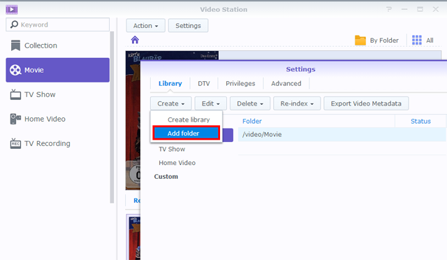

Översikt
Med Video Station, kan du enkelt organisera och kategorisera din videosamling i olika standard eller anpassade bibliotek, så att du hittar videon du vill se mycket effektivare. Dessutom spela och dela videoklipp kan vara lika enkelt och okomplicerat som några få enkla klick.
1. Installera Video Station
För att installera Video Station, gå till Paketcenter, sök Video Station, och därefter klicka på Installera.

2. Lagra och kategorisera videor till standardbibliotek
Med Video Station får du tre standardbibliotek som visas på den vänstra panelen: Film, TV-program, och Hemmavideo. För att se till att dina filmer är korrekt indexerade och kategoriserade, måste du först lägga till videomappar för varje bibliotek och sedan lagra dina filer till motsvarande videomappar. Som standard, har tre mappar skapats under video delad mapp för de tre standardbiblioteken: film, TV-program, och hemmavideo. Men utöver dessa tre mappar, kan du också göra följande för att lägga till fler videomappar för biblioteken.
Systemet kommer automatiskt att söka tillhörande metadata och annan information (t.ex. affischbild) för två videotyper (film och tv-program) från Internet. Således, för att garantera att dina videor kan paras ihop med rätt information, rekommenderar vi att filmerna ska matcha den angivna videotypen för deras respektive bibliotek.
Lägg till videomappar för standardbibliotek
- Gå till Inställningar > Bibliotek.
- Klicka på Skapa > Lägg till mapp för att välja en mapp från din Synology NAS, och markera målbibliotek. Du kan lägga till upp till 100 videomappar i ett bibliotek, men när en mapp är markerad, kan varken mappen eller dess undermappar markeras för ett annat bibliotek. 
- Lagra videofiler till videomappar för att kategorisera videoklipp i motsvarande bibliotek.
- Nu kan du söka och titta på dina videofilmer från biblioteken!

3. Lagra och kategorisera videor till anpassade bibliotek
Förutom de tre standardbiblioteken som alla som standard har åtkomst till, kan du som DSM admin eller användare tillhörande gruppen administrators, också skapa anpassade bibliotek och tilldela åtkomsträttigheter till specifika användare.
3.1 Skapa anpassade bibliotek
- Gå till Inställningar > Bibliotek och klicka på Skapa > Skapa bibliotek.
- Ange ett namn för det nya biblioteket, markera vilken typ av filmer du vill placera i mappen och välj sedan Offentligt om du vill att biblioteket ska kunna tillgås av alla, eller välj Privat för att begränsa tillgång till vissa användare som har behörighet. Observera att de videor du placerar i mappen måste matcha typen markerad för att garantera riktigheten av videoinformation från Internet.
- Om du väljer Privat, klicka på Tilldela rättigheter och markera kryssrutan för att bevilja tillgång till användarna.

3.2 Lägg till videomappar för anpassade bibliotek
- Gå till Inställningar > Bibliotek.
- Klicka på Skapa > Lägg till mapp för att välja en mapp från din Synology NAS, och markera målbibliotek. Du kan lägga till upp till 100 videomappar till ett bibliotek, men när en mapp är markerad, kan varken mappen eller dess undermappar markeras för ett annat bibliotek.
- Lagra videofiler till videomappar för att kategorisera videoklipp i motsvarande bibliotek.
- Nu kan du söka och titta på dina videofilmer från biblioteken!
4. Spela upp videoklipp
När du har kategoriserat dina videofiler till olika bibliotek kan du följa stegen nedan för att spela upp videor på Video Station. Vi rekommenderar att du först installerar VLC media player (Windows, Linux) på din dator. Förutom att spela upp videor på din lokala dator kan du också strömma dina videor till DLNA/UPnP-kompatibla DMAs eller AirPlay-kompatibla enheter för videouppspelning.
Spela videor med den inbyggda videospelaren
- Markera ett videoklipp du vill spela upp och klicka på spela upp-ikonen på videobilden, eller klicka Åtgärd > Spela upp.
- Videon börjar spelas upp direkt. Om inte, kontrollera att formatet stöds av din webbläsare, eller om du har installerat VLC plugin i din dator.
- Använd knapparna på skärmen och förloppsindikatorn längst ned i videospelaren i enlighet med dina behov. Du kan även justera volymen, markera videouppspelningskvalitet och ljudspår, aktivera undertexter eller strömma video till en annan enhet (om tillämpligt).


För detaljerad information om VLC plugin och enheter med stöd, läs DSM Hjälp > Video Station > Videouppspelning.
5. Dela videor med allmänheten
Med den allmänna delningsfunktionen kan du enkelt dela dina videor med andra med hjälp av Video Station. Alla delade videor är offentligt tillgängliga för alla med länken, och kan hanteras på sidan Samling.
Dela videor med andra
- Gå till ett videobibliotek och klicka på Alla i det övre högra hörnet för att se alla videor i detta bibliotek.
- Klicka på ikonen Val av läge, eller tryck och håll Ctrl eller Shift för att markera flera videor. Därefter klicka på Åtgärd > Dela med allmänheten.
- Om du bara har markerat en video för delning, läggs videon till i en delad samling kallad Delade videor. Där kan du hantera alla de videor du har delat en efter en.
- Om du har markerat flera videor för delning, grupperas videorna in i en ny delad samling.
- Alternativt kan du klicka på Åtgärd > Samling för att lägga till de markerade videorna till en befintlig delad samling (om tillämpligt).
- Vid behov ange en giltighetsperiod.
- Kopiera och klistra in länken i e-postmeddelanden, snabbmeddelanden och webbsidor för att dela videor med alla.

6. Organisera och titta på videor på mobila enheter
För att ansluta Video Station via mobila enheter kan du ladda ned DS video med iOS-/Android-enheter eller Windows Phone med nedanstående QR-koder för att spela upp videor och organisera dina samlingar på din mobila enhet eller strömma videor till dina DMAs eller AirPlay-enheter, både hemma och när du är ute och rör på dig.